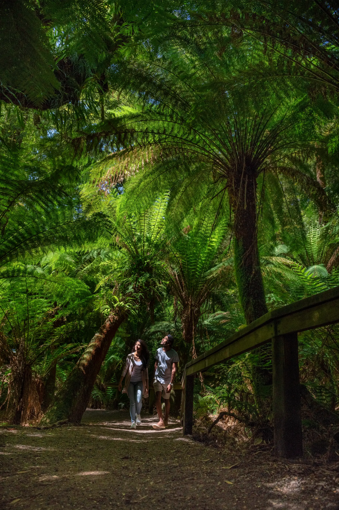
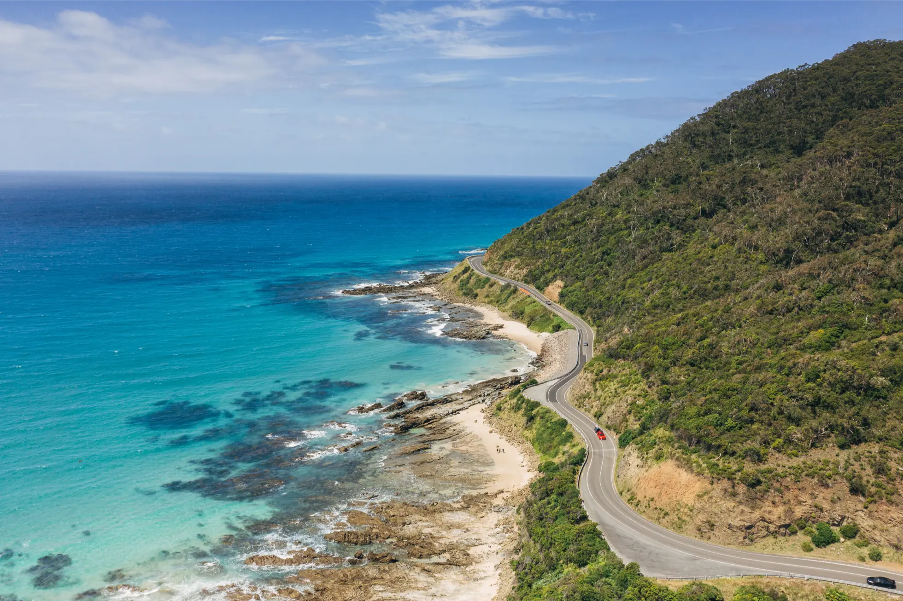

Operator transparency
About The Great Ocean Road Tour
The Great Ocean Road Tour is a specialist Great Ocean Road planning and private tour website operated by Australian Journeys, a Melbourne-based private tour company.
This site exists to help travellers plan better Great Ocean Road day trips from Melbourne with honest advice, realistic itineraries, and clear private tour options.
Created to Help Travellers Plan Better Great Ocean Road Day Trips
The Great Ocean Road is one of Victoria's most famous touring routes, but planning it well from Melbourne can be harder than it first appears.
This site helps travellers understand what is realistic in one day, which stops are most worthwhile, and when a private tour may be the best option.
Operated by Australian Journeys
The Great Ocean Road Tour is operated by Australian Journeys.
Australian Journeys is a Melbourne-based private tour company offering private tours and custom itineraries across selected Victorian regions. This website is a focused planning and enquiry website for Great Ocean Road private tours operated by Australian Journeys.

A Specialist Focus on the Great Ocean Road
The Great Ocean Road deserves its own focused planning space.
Many visitors arrive with a long list of places they want to see, but not every stop fits comfortably into a one-day tour from Melbourne. This site explains those trade-offs in a practical way.
Private Touring That Feels Comfortable, Flexible and Realistic
Australian Journeys believes a good private tour should feel well-planned without feeling rigid.
- Planning around a safe and realistic day-tour window
- Giving honest advice about distance and timing
- Avoiding overloaded itineraries
- Prioritising the best stops for each group
- Allowing flexibility where the day permits
- Keeping comfort and safety in mind
Who We Help
- Couples wanting a private day from Melbourne
- Families who need a flexible pace
- Small and larger private groups
- International visitors with limited time
- Cruise visitors, where timing allows
- Older travellers who prefer comfort
- Visitors comparing private tours, public tours, and self-drive options
Local Knowledge, Private Tour Experience and Clear Advice
Australian Journeys combines local planning experience with a private touring approach. The focus is on clear communication before the tour, realistic expectations, comfortable travel, and helping each group make the most of the day.
Where a stop is possible, it can be considered. Where something is unrealistic, unsafe, or likely to make the day feel rushed, Australian Journeys will explain that too.
Plan Your Great Ocean Road Tour
Start with the private tour page if you want the core Great Ocean Road experience from Melbourne, or request a custom itinerary if your group has specific interests, timing needs, or must-see stops.